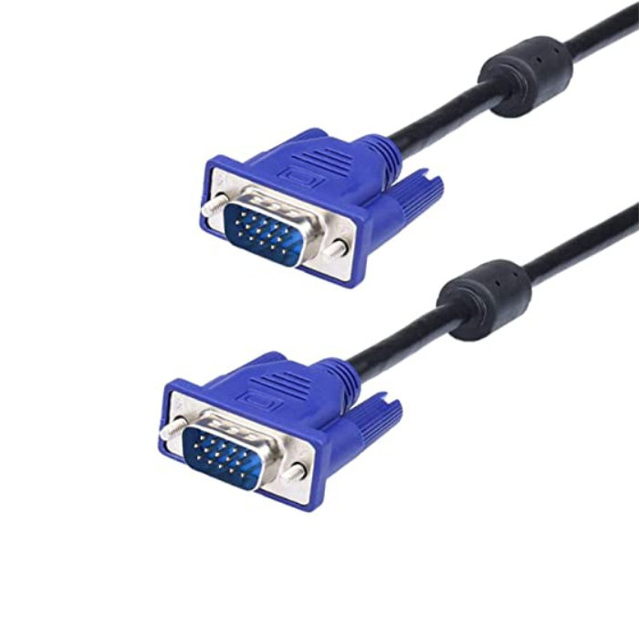
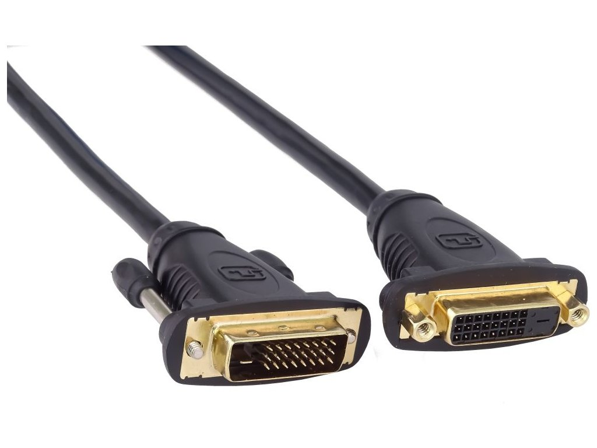
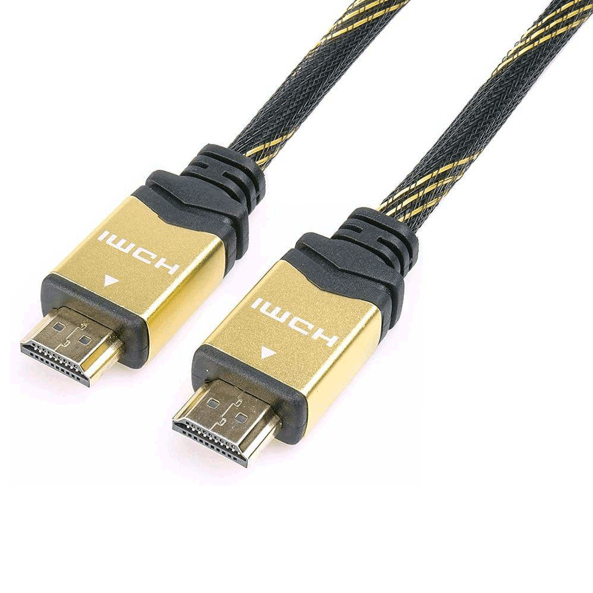
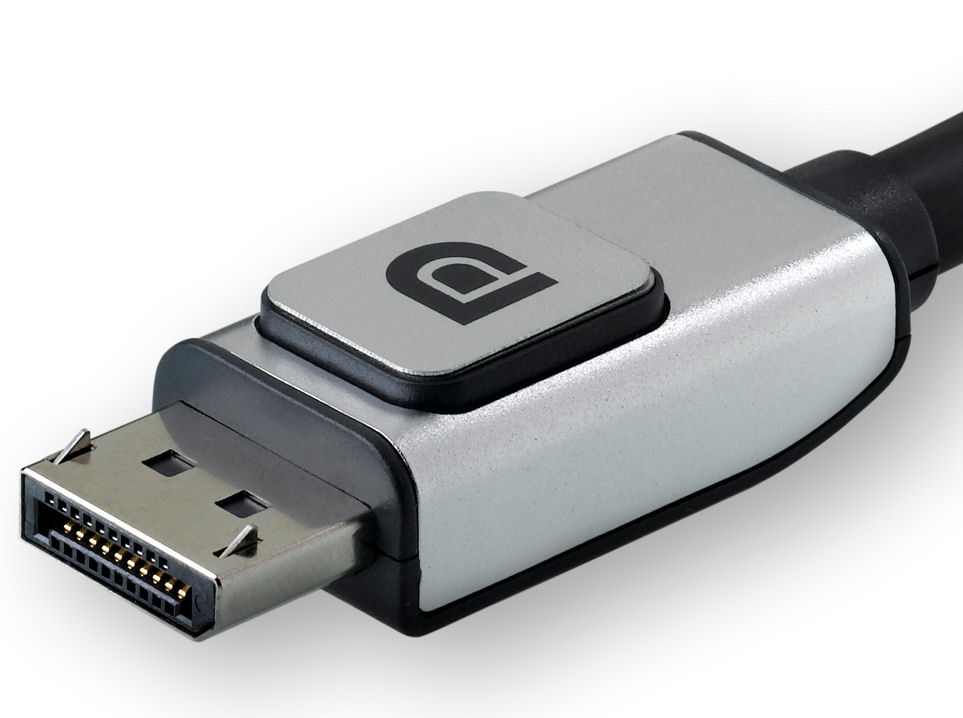

-
VGA
VGA je nejstarším a stále používaným konektorem. Jedná se o konektor analogový a hodil se tedy spíše ke starším CRT monitorům, které zpracovávaly signál analogově. Grafická karta musela původní digitální signál nejprve převést na analogový a ten dále pokračoval do zobrazovacího zařízení (kde je v modernějších monitorech znovu digitalizován). VGA konektor je již v dnešní době zastaralý a výrobci jej nakonec úplně odstranili z nových grafických karet. Slabinou tohoto konektoru bylo maximální rozlišení 2048 × 1536 pixelů, které bylo na většině monitorů dále omezeno na 1600 × 1200 pixelů a nemožnost současného přenosu obrazu a zvuku. -
DVI
Digital Video Interface (DVI) konektor vznikl kvůli potřebě přenášet do monitoru digitální signál, aby novější monitory typu LCD, nemusely převádět analogový signál zpět na digitální (což je problém VGA konektoru).
Běžně se můžeme setkat s dvěma typy konektoru DVI. Prvním je DVI-D, který je čistě digitální a druhým pak DVI-I, který disponuje jak digitálním, tak i analogovým signálem, který může být pomocí jednoduché redukce vyveden do monitoru s klasickým VGA konektorem. Zvláštností je DVI-A, který je pouze analogový. Všechny tři typy se rovněž vyskytují jako single a dual link. Single link je většinou omezený na maximální rozlišení 1920 × 1200 pixelů, dual pak na 2560 × 1600 pixelů, avšak potřebuje speciální typ kabelu -
HDMI
HDMI konektor je používán zejména pro multimediální zařízení, jako je televizor, DVD a Blu-ray přehrávače, herní konzole apod. Konektor HDMI byl představen v roce 2002 a prošel několika změnami. Současná verze je HDMI 2.1. Výhodou oproti DVI je možnost přenosu až osmi zvukových kanálů spolu s obrazem. Rozlišení je omezeno na 4096 × 2160 pixelů. -
Display port
Nejnovějším konektorem je takzvaný DisplayPort, který byl představen roku 2009. Je navržen tak, aby nahradil digitální (DVI) i analogové (VGA) konektory v monitorech počítačů stejně jako v grafických kartách. Má všechny funkce HDMI, ale nepředpokládá se, že by měl HDMI nahradit v oblasti domácí spotřební elektroniky, protože je určen spíše pro kancelářské a IT využití.

VGA

DVI

HDMI

DisplayPort